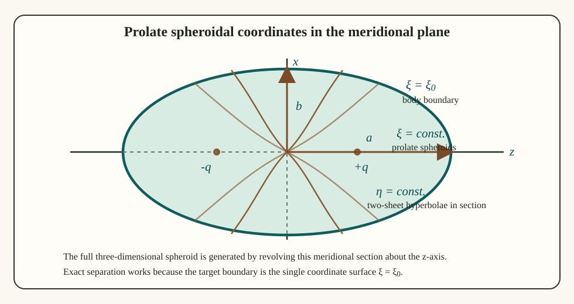
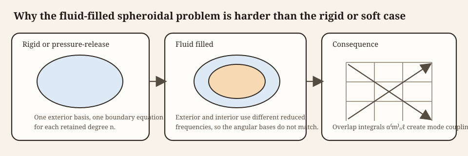

Prolate spheroidal modal series solution (PSMS) theory
Source:vignettes/psms/psms-theory.Rmd
psms-theory.RmdIntroduction
Benchmarked Validated
Model-family pages: Overview Implementation Theory
The prolate spheroidal modal series solution (PSMS) is the natural exact-separation analogue of spherical partial-wave theory for elongated bodies whose surface is better approximated by a prolate spheroid than by a sphere or cylinder. The essential fact is that the Helmholtz equation is separable in prolate spheroidal coordinates, so the incident, scattered, and interior fields can all be expanded in spheroidal angular and radial wave functions (Spence and Granger 1951; Furusawa 1988; Flammer 1957).
The rigid case enforces zero normal velocity on \xi = \xi_1, the pressure-release case enforces zero pressure there, and the fluid-filled or gas-filled cases enforce continuity of pressure and normal velocity between the exterior and interior media. In the PSMS itself, the rigid and pressure-release cases remain comparatively simple because only the exterior basis is involved. The fluid-filled and gas-filled cases use the same interior-fluid algebra, but with different interior material properties and therefore different reduced frequencies. That basis mismatch is what makes the coupled interior problem harder.
The mathematical structure is the same as in spherical scattering, but the basis is more intricate. Instead of Legendre polynomials and spherical Bessel functions, one obtains angular spheroidal functions and radial spheroidal functions. That similarity is what makes the PSMS interpretable as a true modal scattering theory. The difference is what makes it algebraically and numerically more demanding.
Physical basis of the PSMS
Why prolate spheroidal coordinates are the natural starting point
The PSMS begins from a geometric observation. A prolate spheroid is a coordinate surface of the prolate spheroidal system, so the boundary of the scatterer is represented exactly by a single coordinate value, \xi = \xi_1. That fact matters because exact separation of variables only becomes useful when the boundary condition can also be written on a coordinate surface. In that sense, the PSMS is derived by matching the coordinate system to the geometry from the outset.
Linear time-harmonic scattering problem
Assume linear acoustics with harmonic time dependence e^{-i\omega t}. In each homogeneous region, the pressure satisfies the Helmholtz equation. The scattering problem then proceeds in three steps. First, the incident field is expanded in regular spheroidal eigenfunctions. Second, the scattered field is expanded in outgoing spheroidal eigenfunctions. Third, if the spheroid contains an interior fluid or gas, the interior field is expanded in regular interior spheroidal eigenfunctions. The boundary conditions then determine the modal coefficients.
This summary is simple, but it already contains the main distinction between the rigid or pressure-release cases and the interior-fluid cases. When only the exterior basis matters, the coefficient bookkeeping remains effectively local. Once an interior medium with a different reduced frequency is introduced, the basis mismatch becomes part of the physics and part of the algebra.
Prolate spheroidal coordinates and geometry
Coordinate definitions
Let q denote the semifocal length of the spheroid, and let (\xi,\eta,\phi) be prolate spheroidal coordinates. In Cartesian coordinates:
x = q\sqrt{(\xi^2-1)(1-\eta^2)}\cos\phi, \qquad y = q\sqrt{(\xi^2-1)(1-\eta^2)}\sin\phi, \qquad z = q\xi\eta.
The coordinate ranges are:
\xi \ge 1, \qquad -1 \le \eta \le 1, \qquad 0 \le \phi < 2\pi.
Surfaces of constant \xi are prolate spheroids. The metric coefficients are:
h_\xi = q\sqrt{\frac{\xi^2-\eta^2}{\xi^2-1}}, \qquad h_\eta = q\sqrt{\frac{\xi^2-\eta^2}{1-\eta^2}}, \qquad h_\phi = q\sqrt{(\xi^2-1)(1-\eta^2)}.
These scale factors are the quantities that make separation of variables possible after the Helmholtz operator is written in curvilinear coordinates.
Geometric parameters of the spheroid
If the body surface is the coordinate surface \xi = \xi_1, then the major semi-axis a and minor semi-axis b satisfy:
a = \xi_1 q, \qquad b = q\sqrt{\xi_1^2-1}.
Eliminating q gives:
\xi_1 = \left[1-\left(\frac{b}{a}\right)^2\right]^{-1/2}, \qquad q = \frac{a}{\xi_1}.
Thus \xi_1 is the natural shape parameter of the spheroid, while q sets the absolute scale.


The boundary is imposed on \xi = \xi_1, with the focal points at \pm q fixing the prolate geometry and the semi-axes a and b setting the physical scale. In the rigid and pressure-release cases, one exterior spheroidal basis is sufficient, so each retained degree stays effectively local. In the fluid-filled and gas-filled cases, the interior and exterior reduced frequencies differ, so the angular bases no longer match exactly and the overlap integrals become the mechanism that couples degrees together.
The projection step is the part of the interior-fluid derivation that makes the PSMS algebra noticeably harder. The exterior angular basis is complete for the exterior reduced frequency \mathbb{k}_1, and the interior basis is complete for the interior reduced frequency \mathbb{k}_2, but those two families are not identical when \mathbb{k}_1 \ne \mathbb{k}_2. The overlap matrix is therefore the bridge between two valid but nonidentical angular descriptions of the same boundary data.
Reduced frequency
For each medium one defines the reduced spheroidal frequency parameter:
\mathbb{k} = kq.
This parameter plays the same qualitative role in spheroidal scattering that ka plays in spherical or cylindrical scattering. It governs the oscillatory character of the spheroidal basis and therefore the number of degrees needed for accurate representation, but the resulting angular and radial structure is more intricate than in the spherical or cylindrical cases.
Separation of the Helmholtz equation
Separated form
In any homogeneous region, the pressure satisfies:
\nabla^2 p + k^2p = 0
Write the pressure as a product of radial, angular, and azimuthal factors:
p(\xi,\eta,\phi) = R(\xi)S(\eta)\Phi(\phi)
Substituting this product into the Helmholtz equation in prolate spheroidal coordinates yields three ordinary differential equations. The azimuthal dependence gives:
\Phi(\phi) = \cos m\phi \quad \text{or} \quad \sin m\phi
with integer order m \ge 0. The remaining equations define the angular spheroidal functions S_{mn}(h,\eta) and the radial spheroidal functions R_{mn}^{(i)}(h,\xi), where n \ge m is degree.
The separation succeeds because the metric factors of prolate spheroidal coordinates split into purely \xi-dependent and purely \eta-dependent parts after division by RS\Phi. The shared separation constant is the eigenvalue \lambda_{mn}(h). This is the exact analogue of what happens with associated Legendre functions in spherical scattering, but with one important difference: the eigenvalue itself depends on the reduced frequency \mathbb{k}. That dependence is one reason the fluid-filled problem becomes coupled when the interior and exterior media differ.
Written explicitly, the Helmholtz operator in prolate spheroidal coordinates gives:
\frac{\partial}{\partial\xi}\left[(\xi^2-1)\frac{\partial p}{\partial\xi}\right] + \frac{\partial}{\partial\eta}\left[(1-\eta^2)\frac{\partial p}{\partial\eta}\right] + \frac{\xi^2-\eta^2}{(\xi^2-1)(1-\eta^2)}\frac{\partial^2 p}{\partial\phi^2} + \mathbb{k}^2(\xi^2-\eta^2)p = 0
Substituting p = RS\Phi and dividing by RS\Phi gives:
\frac{1}{R}\frac{d}{d\xi}\left[(\xi^2-1)\frac{dR}{d\xi}\right] + \mathbb{k}^2\xi^2 + \frac{1}{S}\frac{d}{d\eta}\left[(1-\eta^2)\frac{dS}{d\eta}\right] - \mathbb{k}^2\eta^2 + \frac{1}{\Phi}\frac{\xi^2-\eta^2}{(\xi^2-1)(1-\eta^2)}\frac{d^2\Phi}{d\phi^2} = 0
The azimuthal dependence is separated by imposing:
\frac{1}{\Phi}\frac{d^2\Phi}{d\phi^2} = -m^2
and separating the remaining \xi and \eta dependence with eigenvalue \lambda_{mn}(h) produces the radial and angular equations stated below.
Angular equation
The angular function satisfies:
\frac{d}{d\eta}\left[(1-\eta^2)\frac{dS}{d\eta}\right] + \left(\lambda_{mn}(\mathbb{k}) - \mathbb{k}^2\eta^2 - \frac{m^2}{1-\eta^2}\right)S = 0
where \lambda_{mn}(h) is the separation constant. When h \to 0, this reduces to the associated Legendre equation, so the spheroidal angular functions reduce smoothly to Legendre functions.
Radial equation
The radial function satisfies:
\frac{d}{d\xi}\left[(\xi^2-1)\frac{dR}{d\xi}\right] - \left(\lambda_{mn}(\mathbb{k}) - \mathbb{k}^2\xi^2 + \frac{m^2}{\xi^2-1}\right)R = 0
Its independent solutions are the radial spheroidal functions of the first, second, third, and fourth kinds. For scattering, the first and third kinds play the same roles as regular Bessel and outgoing Hankel functions in spherical theory.
Field expansions
Incident plane-wave expansion
A plane wave incident at polar angle \theta' can be expanded in spheroidal harmonics. Let region 1 denote the surrounding medium and region 2 the spheroid interior. The exterior incident field then has the form:
p_{1,\text{inc}} = 2\sum_{m=0}^{\infty}\sum_{n=m}^{\infty} \frac{\epsilon_m i^n}{N_{mn}(\mathbb{k}_1)} S_{mn}^{(1)}(\mathbb{k}_1,\cos\theta') S_{mn}^{(1)}(\mathbb{k}_1,\eta) R_{mn}^{(1)}(\mathbb{k}_1,\xi) \cos m(\phi-\phi')
This is the spheroidal analogue of the spherical plane-wave expansion. It is the starting point for every boundary-condition derivation because it expresses the known incident field in the same basis used for the unknown scattered field.
The scattered and interior fields are expanded in the same angular structure but with different radial functions:
\begin{align*} p_{1,\text{scat}} &= 2\sum_{m=0}^{\infty}\sum_{n=m}^{\infty} \frac{\epsilon_m i^n}{N_{mn}(\mathbb{k}_1)} S_{mn}^{(1)}(\mathbb{k}_1,\cos\theta') A_{mn}S_{mn}^{(1)}(\mathbb{k}_1,\eta)R_{mn}^{(3)}(\mathbb{k}_1,\xi), \\ p_{2, \text{interior}} &= 2\sum_{m=0}^{\infty}\sum_{\ell=m}^{\infty} \frac{\epsilon_m i^\ell}{N_{m\ell}(\mathbb{k}_2)} B_{m\ell}S_{m\ell}^{(1)}(\mathbb{k}_2,\eta)R_{m\ell}^{(1)}(\mathbb{k}_2,\xi) \cos m(\phi-\phi'). \end{align*}
These are the full modal expansions from which the pressure-release, rigid, fluid-filled, and gas-filled boundary systems follow. The important bookkeeping point is that the exterior incident and scattered fields share the same reduced frequency \mathbb{k}_1, whereas the interior field carries \mathbb{k}_1. That single difference is what later forces the projection step in the interior-fluid case.
Far-field scattering amplitude
The scattered far-field amplitude is expanded as:
f_\infty(\theta,\phi\mid\theta',\phi') = \frac{-2i}{k_2} \sum_{m=0}^{\infty}\sum_{n=m}^{\infty} \frac{\epsilon_m}{N_{mn}(\mathbb{k}_1)} S_{mn}^{(1)}(\mathbb{k}_1,\cos\theta') A_{mn} S_{mn}^{(1)}(\mathbb{k}_1,\cos\theta) \cos m(\phi-\phi')
Here N_{mn}(\mathbb{k}_1) is the norm of the angular function, \epsilon_m is the Neumann factor, and A_{mn} is the modal scattering coefficient determined by the boundary conditions.
Boundary-condition derivations
Pressure-release spheroid
For a pressure-release boundary, the total pressure vanishes on the surface \xi = \xi_1. If the incident field is expanded in regular radial functions R_{mn}^{(1)} and the scattered field in outgoing functions R_{mn}^{(3)}, then for each (m,n):
R_{mn}^{(1)}(\mathbb{k}_1,\xi_1) + A_{mn}R_{mn}^{(3)}(\mathbb{k}_1,\xi_1) = 0
This boundary condition gives the modal coefficient:
A_{mn} = -\frac{R_{mn}^{(1)}(\mathbb{k}_1,\xi_1)}{R_{mn}^{(3)}(\mathbb{k}_1,\xi_1)}
Fixed-rigid spheroid
For a rigid boundary, the normal velocity vanishes, so the derivative with respect to the radial spheroidal coordinate must vanish on the surface. Thus:
\frac{\partial}{\partial\xi}R_{mn}^{(1)}(\mathbb{k}_1,\xi_1) + A_{mn}\frac{\partial}{\partial\xi}R_{mn}^{(3)}(\mathbb{k}_1,\xi_1) = 0
This condition gives the corresponding modal coefficient:
A_{mn} = -\frac{R_{mn}^{(1)\prime}(\mathbb{k}_1,\xi_1)}{R_{mn}^{(3)\prime}(\mathbb{k}_1,\xi_1)}
These two cases are summarized compactly as:
A_{mn} = -\frac{\Delta R_{mn}^{(1)}(\mathbb{k}_1,\xi_1)}{\Delta R_{mn}^{(3)}(\mathbb{k}_1,\xi_1)}
where \Delta = 1 for pressure release and \Delta = \partial/\partial\xi for a rigid boundary.
Fluid-filled and gas-filled spheroid
The fluid-filled case is more involved because the interior field uses a different reduced frequency, \mathbb{k}_1 = k_2 q, and therefore a different spheroidal basis. The exterior and interior angular functions are not identical when \mathbb{k}_1 \ne \mathbb{k}_1, so the boundary conditions do not remain diagonal in n. The gas-filled case uses exactly the same algebraic structure as the fluid-filled case; only the interior density and sound speed differ.
Here \mathbb{k}_1 = k_1 q and \mathbb{k}_1 = k_2 q are the exterior and interior reduced frequencies, while \rho_1 and \rho_2 are the corresponding densities. Because the boundary is the coordinate surface \xi = \xi_1, the normal derivative is proportional to \partial / \partial \xi on both sides of the interface, so the common metric factor cancels from the normal-velocity continuity condition.
Let the exterior scattered coefficients be A_{mn} and the interior coefficients be B_{m\ell}. With exterior total pressure p_1 = p_{1,\text{inc}} + p_{1,\text{scat}} and interior pressure p_1, pressure continuity at \xi = \xi_1 gives:
\begin{align*} &\sum_{n=m}^{\infty} A_{mn}S_{mn}^{(1)}(\mathbb{k}_1,\eta)R_{mn}^{(3)}(\mathbb{k}_1,\xi_1) + \sum_{n=m}^{\infty} S_{mn}^{(1)}(\mathbb{k}_1,\eta)R_{mn}^{(1)}(\mathbb{k}_1,\xi_1) \\ &= \sum_{\ell=m}^{\infty} B_{m\ell}S_{m\ell}^{(1)}(\mathbb{k}_1,\eta)R_{m\ell}^{(1)}(\mathbb{k}_1,\xi_1). \end{align*}
Normal-velocity continuity gives the corresponding derivative condition:
\begin{align*} &\frac{1}{\rho_1}\sum_{n=m}^{\infty} A_{mn}S_{mn}^{(1)}(\mathbb{k}_1,\eta)R_{mn}^{(3)\prime}(\mathbb{k}_1,\xi_1) + \frac{1}{\rho_1}\sum_{n=m}^{\infty} S_{mn}^{(1)}(\mathbb{k}_1,\eta)R_{mn}^{(1)\prime}(\mathbb{k}_1,\xi_1) \\ &= \frac{1}{\rho_2}\sum_{\ell=m}^{\infty} B_{m\ell}S_{m\ell}^{(1)}(\mathbb{k}_2,\eta)R_{m\ell}^{(1)\prime}(\mathbb{k}_2,\xi_1). \end{align*}
To solve these equations, one projects onto the interior angular basis using orthogonality. This introduces overlap integrals of the form:
\alpha_{n\ell}^m = \frac{1}{N_{m\ell}(\mathbb{k}_2)} \int_{-1}^{1} S_{mn}^{(1)}(\mathbb{k}_1,\eta)S_{m\ell}^{(1)}(\mathbb{k}_2,\eta)\,d\eta
These coefficients measure how strongly an exterior mode (m,n) couples to an interior mode (m,\ell). The projection step is the exact analogue of multiplying a spherical expansion by a Legendre polynomial and integrating over angle. The difference is that because the exterior and interior spheroidal bases correspond to different reduced frequencies, the resulting overlap matrix is no longer diagonal.
The angular orthogonality relation for a fixed reduced frequency is:
\int_{-1}^{1} S_{mn}^{(1)}(h,\eta)S_{m\ell}^{(1)}(h,\eta)\,d\eta = N_{mn}(h)\delta_{n\ell}
When \mathbb{k}_1 \ne \mathbb{k}_2, this orthogonality does not diagonalize the mixed products between the two media, which is exactly why the overlap coefficients \alpha_{n\ell}^m appear.
After eliminating the interior coefficients, one obtains a coupled linear system in the exterior coefficients of the form:
\sum_{n=m}^{\infty} K_{n\ell}^{m(3)}A_{mn} + \sum_{n=m}^{\infty}K_{n\ell}^{m(1)} = 0
where the kernels are built from the overlap coefficients and the radial boundary combinations. A convenient factorization of those kernels is:
K_{n\ell}^{m(z)} = \frac{i^n}{N_{mn}(\mathbb{k}_1)} S_{mn}^{(1)}(\mathbb{k}_1,\cos\theta') \alpha_{n\ell}^{m} E_{n\ell}^{m(z)}
The boundary combination entering that factorization is:
E_{n\ell}^{m(z)} = R_{mn}^{(z)}(\mathbb{k}_1,\xi_1) - \frac{\rho_2}{\rho_1} \frac{R_{m\ell}^{(1)}(\mathbb{k}_2,\xi_1)}{R_{m\ell}^{(1)\prime}(\mathbb{k}_2,\xi_1)} R_{mn}^{(z)\prime}(\mathbb{k}_1,\xi_1)
This is the precise place where the interior-fluid spheroidal problem becomes harder than the spherical one: the mismatch between \mathbb{k}_1 and \mathbb{k}_2 causes mode coupling through the overlap integrals \alpha_{n\ell}^m. That statement matters physically as well as numerically. The overlap coefficients are not an arbitrary technical complication added after the fact. They are the direct mathematical expression of the fact that the interior and exterior media support different spheroidal angular bases on the same boundary.
Weak-coupling simplification
If the interior and exterior reduced frequencies are close, the two angular bases are nearly the same and the overlap matrix becomes nearly diagonal. Under that near-matching condition:
\alpha_{n\ell}^m \approx 0 \quad \text{for } n \ne \ell
so the system decouples approximately by degree. The modal coefficient then reduces to:
A_{mn} = -\frac{E_{nn}^{m(1)}}{E_{nn}^{m(3)}}
This approximation is the statement that each exterior mode couples mainly to the interior mode of the same degree. It should therefore be read as a near-matching-medium simplification, not as a general property of fluid-filled or gas-filled spheroidal scattering.
Truncation of the infinite series
The exact solution is a double infinite series in m and n. In practice, it is truncated at finite limits. A common estimate is:
m_{max} = \lceil 2k_1b \rceil, \qquad n_{max} = m_{max} + \left\lceil \frac{\mathbb{k}_1}{2} \right\rceil
These truncation rules express the same principle as in spherical scattering: the number of required modes grows with acoustic size.
For the PSMS, however, truncation is not only a matter of how many modal terms to keep in an otherwise diagonal sum. In the interior-fluid case it also sets the size of the dense linear systems and of the overlap matrix that must be resolved accurately. That is why the PSMS can become numerically demanding more quickly than the simpler spherical or cylindrical modal models.
Matrix form of the truncated problem
After truncation, the infinite coupled system becomes a finite dense linear system for each fixed azimuthal order m. If the retained degrees are n,\ell = m,\ldots,N_m, define the coefficient vector:
\mathbf{a}^{(m)} = \begin{bmatrix} A_{mm} & A_{m,m+1} & \cdots & A_{mN_m} \end{bmatrix}^T
The projected boundary equations can then be written as:
\mathbf{M}^{(m)}\mathbf{a}^{(m)} = \mathbf{b}^{(m)}
with entries:
M_{\ell n}^{(m)} = K_{n\ell}^{m(3)}, \qquad b_{\ell}^{(m)} = -\sum_{n=m}^{N_m} K_{n\ell}^{m(1)}
The matrix is generally dense rather than diagonal because every retained exterior mode can couple to several interior modes through the overlap coefficients \alpha_{n\ell}^m. In other words, truncation converts the analytic mode-coupling statement into an ordinary finite-dimensional linear algebra problem.
Numerical evaluation of the overlap matrix
The overlap coefficients are themselves integrals on [-1,1]:
\alpha_{n\ell}^m = \frac{1}{N_{m\ell}(\mathbb{k}_2)} \int_{-1}^{1} S_{mn}^{(1)}(\mathbb{k}_1,\eta)S_{m\ell}^{(1)}(\mathbb{k}_2,\eta)\,d\eta
For the truncated system these integrals are evaluated numerically, typically by Gauss-Legendre quadrature. That is, one replaces the integral by a weighted sum over quadrature nodes \eta_j:
\alpha_{n\ell}^m \approx \frac{1}{N_{m\ell}(\mathbb{k}_2)} \sum_{j=1}^{J} w_j S_{mn}^{(1)}(\mathbb{k}_1,\eta_j)S_{m\ell}^{(1)}(\mathbb{k}_2,\eta_j)
This step is mathematically natural because the overlap integrals are smooth on the finite interval and must be evaluated repeatedly for many pairs (n,\ell). It is also one of the points at which numerical settings become part of the practical model specification.
Stable solution of each modal system
Once \mathbf{M}^{(m)} and \mathbf{b}^{(m)} are assembled, the truncated coefficients are obtained by solving the dense system for each m. Near resonances, or when the interior and exterior bases become nearly linearly dependent after truncation, \mathbf{M}^{(m)} can be poorly conditioned. A stable approach is therefore to compute a singular-value decomposition:
\mathbf{M}^{(m)} = \mathbf{U}\mathbf{\Sigma}\mathbf{V}^*
and form a pseudoinverse solution:
\mathbf{a}^{(m)} = \mathbf{V}\mathbf{\Sigma}^{+}\mathbf{U}^*\mathbf{b}^{(m)}
Very small singular values are discarded relative to the dominant singular value, which suppresses spurious growth associated with the truncated near-null directions. In practical terms, the SVD step separates the physically meaningful modal content from numerical noise introduced by truncation and basis mismatch. The weak-coupling approximation described above is recovered when the overlap matrix is already close to diagonal. In that limit, \mathbf{M}^{(m)} is nearly diagonal as well, and the full matrix solve collapses back to the simpler term-by-term ratio for A_{mn}.
Backscattering cross-section and target strength
Once the modal coefficients are known, the far-field amplitude is evaluated. The backscattering cross-section then becomes:
\sigma_\text{bs} = |f_\infty|^2
with target strength:
TS = 10\log_{10}(\sigma_\text{bs}).
Equivalently, since \sigma_\text{bs} is the squared magnitude of the scattering amplitude, one may write TS = 20\log_{10}|f_\infty| when the amplitude itself is the reported quantity.
Mathematical assumptions
The PSMS derivation rests on the following assumptions:
- The body boundary is exactly prolate spheroidal.
- Each region is homogeneous.
- Linear, time-harmonic acoustics applies.
- The Helmholtz equation is separable in prolate spheroidal coordinates.
- The field expansions converge sufficiently rapidly after modal truncation.
The great advantage of the PSMS is that the geometry is matched directly. The mathematical cost is the appearance of spheroidal special functions and mode coupling in the interior-fluid case. That tradeoff is exactly what makes the model valuable: it keeps a much closer relationship to a truly prolate geometry than a sphere- or cylinder-based substitute, but it pays for that fidelity with more complicated basis functions, overlap integrals, and linear algebra.